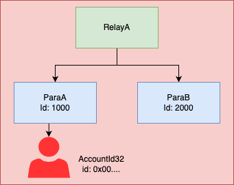

MultiLocation
The MultiLocation type identifies any single location that exists within the world of consensus. It can represent all manner of things that exist within consensus, from a scalable multi-shard blockchain such as Polkadot down to an ERC-20 asset account on a parachain. MultiLocations are used to identify places to send XCMs, places that can receive assets, and can even help describe the type of an asset itself, as we will see in MultiAsset.
Location is relative
MultiLocation always expresses a location relative to the current location. It can be thought of as a file system path, without the ability to directly express the “root” of the file system tree. This is for a simple reason: In the world of Polkadot, blockchains can be merged into, and split from other blockchains. A blockchain can begin as a standalone sovereign chain, and could eventually be elevated to become a parachain within a larger consensus. If it did that, then the meaning of “root” would change overnight and this could spell chaos for XCMs and anything else using MultiLocation. To keep things simple, we exclude this possibility altogether.
Hierarchical structure
Locations in XCM are hierarchical; some places in consensus are wholly encapsulated within other places in consensus. A parachain of Polkadot exists wholly within the overall Polkadot consensus; we call this an interior location. Or a pallet exists wholly within a parachain or relay chain. Putting it more strictly, say we have two consensus systems, A and B. If any change in A implies a change in B, then we say A is interior to B.
So what is a MultiLocation: Simple example
A quick summary of the previous points:
- A MultiLocation identifies any single location that exists within the world of consensus.
- A MultiLocation is always relative to the current location.
- MultiLocations in XCM are hierarchical.
Now take a look at the MultiLocation struct:
pub struct MultiLocation {
pub parents: u8,
pub interior: Junctions,
}As we have already discussed, locations in XCM are hierarchical. The following image shows an example of such a Hierarchy.

Relay chain A completely encapsulates Parachain A and B (indicated by the arrows) and parachain A encapsulates an account 0x00....
So RelayA is higher in the hierarchy than ParaA and ParaB and can be described as the parent of these parachains.
The parents: u8 in the MultiLocation struct describes the number of steps in the hierarchy we want to move up.
The interior: Junctions express the steps in the hierarchy we want to move down.
The Junctions type will be further discussed in the next chapter about Junctions, but for now, it's just a way to express a way down the hierarchy.
As all MultiLocations are relative to the current location, Parachain B relative to Parachain A is one step up and one step down in the hierarchy.
To get a better understanding of this concept, we show some simple MultiLocations in the code example below.
The first two examples are relative to RelayA and the second set of examples is relative to ParaB.
In the Location comments, we expressed the locations in text.
The .. express a step up in the hierarchical structure (the “parent” or the encapsulating consensus system).
The .. are followed by some number of Junctions, all separated by /.
The X1 and X2 variants are expressing the number of Junctions that we step down in the hierarchical structure (see Junctions for an explanation).
// From: RelayA
// To: ParaB
// Location: Parachain(2000)
MultiLocation {parents: 0, interior: X1(Parachain(2000))};
// To: Account in ParaA
// Location: Parachain(1000)/AccountId32(0x00..)
MultiLocation {
parents: 0,
interior: X2(
Parachain(1000),
AccountId32{network: None, id: [0u8; 32]}
)
};
// From: ParaB
// To: RelayA
// Location: ../Here
MultiLocation {parents: 1, interior: Here};
// To: Account in ParaA
// Location: ../Parachain(1000)/AccountId32(0x00..)
MultiLocation {
parents: 1,
interior: X2(
Parachain(1000),
AccountId32{network: None, id: [0u8; 32]}
)
};